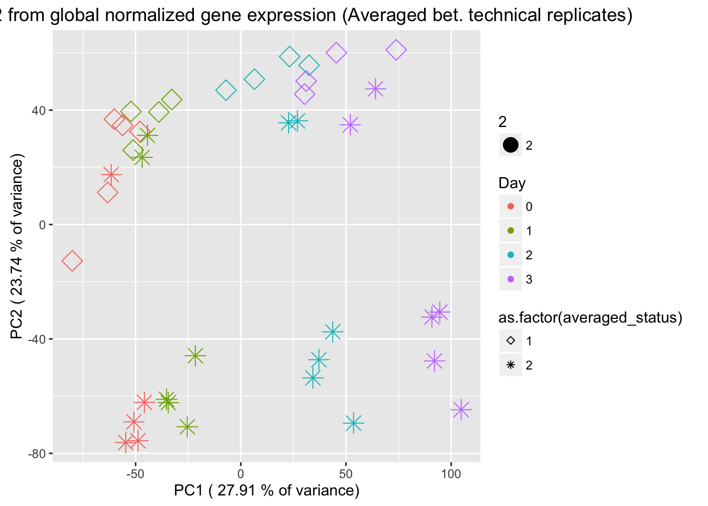

Assessing_combining_technical_replicates
Lauren Blake
January 9, 2017
This script is to assess the impact of combining technical replicates: taking the average of the log2(CPM) of the technical replicates or taking the sum of the technical replicates prior to normalization.
# Load libraries
library("ggplot2")## Warning: package 'ggplot2' was built under R version 3.2.4library("qvalue")## Warning: package 'qvalue' was built under R version 3.2.3source("~/Desktop/Endoderm_TC/ashlar-trial/analysis/chunk-options.R")## Warning: package 'knitr' was built under R version 3.2.5library("RColorBrewer")
# Load colors
pal <- c(brewer.pal(9, "Set1"), brewer.pal(8, "Set2"), brewer.pal(12, "Set3"))
# Load cpm data
cpm_in_cutoff <- read.delim("~/Desktop/Endoderm_TC/ashlar-trial/data/cpm_norm_data.txt")
dim(cpm_in_cutoff)## [1] 10304 63# Load count data
gene_counts_combined_raw_data <- read.delim("~/Desktop/Endoderm_TC/gene_counts_combined.txt")
counts_genes <- gene_counts_combined_raw_data[1:30030,2:65]
rownames(counts_genes) <- gene_counts_combined_raw_data[1:30030,1]When 2 technical replicates, take the average log2(CPM)
# Take the mean of the technical replicates when available
# Day 0 technical replicates
D0_28815 <- as.data.frame(apply(cpm_in_cutoff[,5:6], 1, mean))
D0_3647 <- as.data.frame(apply(cpm_in_cutoff[,8:9], 1, mean))
D0_3649 <- as.data.frame(apply(cpm_in_cutoff[,10:11], 1, mean))
D0_40300 <- as.data.frame(apply(cpm_in_cutoff[,12:13], 1, mean))
D0_4955 <- as.data.frame(apply(cpm_in_cutoff[,14:15], 1, mean))
# Day 1 technical replicates
D1_20157 <- as.data.frame(apply(cpm_in_cutoff[,16:17], 1, mean))
D1_28815 <- as.data.frame(apply(cpm_in_cutoff[,21:22], 1, mean))
D1_3647 <- as.data.frame(apply(cpm_in_cutoff[,24:25], 1, mean))
D1_3649 <- as.data.frame(apply(cpm_in_cutoff[,26:27], 1, mean))
D1_40300 <- as.data.frame(apply(cpm_in_cutoff[,28:29], 1, mean))
D1_4955 <- as.data.frame(apply(cpm_in_cutoff[,30:31], 1, mean))
# Day 2 technical replicates
D2_20157 <- as.data.frame(apply(cpm_in_cutoff[,32:33], 1, mean))
D2_28815 <- as.data.frame(apply(cpm_in_cutoff[,37:38], 1, mean))
D2_3647 <- as.data.frame(apply(cpm_in_cutoff[,40:41], 1, mean))
D2_3649 <- as.data.frame(apply(cpm_in_cutoff[,42:43], 1, mean))
D2_40300 <- as.data.frame(apply(cpm_in_cutoff[,44:45], 1, mean))
D2_4955 <- as.data.frame(apply(cpm_in_cutoff[,46:47], 1, mean))
# Day 3 technical replicates
D3_20157 <- as.data.frame(apply(cpm_in_cutoff[,48:49], 1, mean))
D3_28815 <- as.data.frame(apply(cpm_in_cutoff[,53:54], 1, mean))
D3_3647 <- as.data.frame(apply(cpm_in_cutoff[,56:57], 1, mean))
D3_3649 <- as.data.frame(apply(cpm_in_cutoff[,58:59], 1, mean))
D3_40300 <- as.data.frame(apply(cpm_in_cutoff[,60:61], 1, mean))
D3_4955 <- as.data.frame(apply(cpm_in_cutoff[,62:63], 1, mean))
# Create a new data frame with all of the combined technical replicates
mean_tech_reps <- cbind(cpm_in_cutoff[,1:4], D0_28815, cpm_in_cutoff[,7], D0_3647, D0_3649, D0_40300, D0_4955, D1_20157, cpm_in_cutoff[,18:20], D1_28815, cpm_in_cutoff[,23], D1_3647, D1_3649, D1_40300, D1_4955, D2_20157, cpm_in_cutoff[,34:36], D2_28815, cpm_in_cutoff[,39], D2_3647, D2_3649, D2_40300, D2_4955, D3_20157, cpm_in_cutoff[,50:52], D3_28815, cpm_in_cutoff[,55], D3_3647, D3_3649, D3_40300, D3_4955)
colnames(mean_tech_reps) <- c("D0_20157", "D0_20961", "D0_21792", "D0_28162", "D0_28815", "D0_29089", "D0_3647", "D0_3649", "D0_40300", "D0_4955", "D1_20157", "D1_20961", "D1_21792", "D1_28162", "D1_28815", "D1_29089", "D1_3647", "D1_3649", "D1_40300", "D1_4955", "D2_20157", "D2_20961", "D2_21792", "D2_28162", "D2_28815", "D2_29089", "D2_3647", "D2_3649", "D2_40300", "D2_4955", "D3_20157", "D3_20961", "D3_21792", "D3_28162", "D3_28815", "D3_29089", "D3_3647", "D3_3649", "D3_40300", "D3_4955")
dim(mean_tech_reps)[1] 10304 40# Make a column for which are averaged or not
averaged_status <- c(1,1,1,1,2,1,2,2,2,2,2,1,1,1,2,1,2,2,2,2,2,1,1,1,2,1,2,2,2,2,2,1,1,1,2,1,2,2,2,2)
# Find the technical factors for the biological replicates (no technical replicates)
bio_rep_samplefactors <- read.delim("~/Downloads/samplefactors-filtered.txt", stringsAsFactors=FALSE)
day <- bio_rep_samplefactors$Day
species <- bio_rep_samplefactors$Species
# Make PCA plots with the factors colored by day
pca_genes <- prcomp(t(mean_tech_reps), scale = T, retx = TRUE, center = TRUE)
matrixpca <- pca_genes$x
pc1 <- matrixpca[,1]
pc2 <- matrixpca[,2]
pc3 <- matrixpca[,3]
pc4 <- matrixpca[,4]
pc5 <- matrixpca[,5]
pcs <- data.frame(pc1, pc2, pc3, pc4, pc5)
summary <- summary(pca_genes)
#dev.off()
ggplot(data=pcs, aes(x=pc1, y=pc2, color=as.factor(day+1), shape=as.factor(averaged_status), size=2)) + geom_point() + xlab(paste("PC1 (",(summary$importance[2,1]*100), "% of variance)")) + ylab(paste("PC2 (",(summary$importance[2,2]*100), "% of variance)")) + theme_minimal() + guides(color = guide_legend(order=1), size = FALSE, shape = guide_legend(order=3)) + scale_color_discrete(name ="Day", labels = c("0", "1", "2", "3")) + scale_shape_manual(values = c(5, 7)) + scale_shape_discrete(name ="Replicate status", labels = c("Single" ,"Averaged")) + labs(title = "PCs 1 and 2 from global normalized expression")Scale for 'shape' is already present. Adding another scale for 'shape',
which will replace the existing scale.
ggplot(data=pcs, aes(x=pc1, y=pc2, color=as.factor(day+1), shape=as.factor(averaged_status), size=2)) + geom_point() + xlab(paste("PC1 (",(summary$importance[2,1]*100), "% of variance)")) + ylab(paste("PC2 (",(summary$importance[2,2]*100), "% of variance)")) + scale_shape_manual(values = c(5, 8)) + scale_color_discrete(name ="Day", labels = c("0", "1", "2", "3")) + labs(title = "PCs 1 and 2 from global normalized gene expression (Averaged bet. technical replicates)")
#ggplotly()When 2 technical replicates, sum the gene counts and then normalize all data together
# Remove D0_28815 outlier
counts_genes63 <- counts_genes[,-2]
dim(counts_genes63)[1] 30030 63After_removal_sample_info <- read.csv("~/Desktop/Endoderm_TC/After_removal_sample_info.csv")
Species <- After_removal_sample_info$Species
species <- After_removal_sample_info$Species
day <- After_removal_sample_info$Day
individual <- After_removal_sample_info$Individual
Sample_ID <- After_removal_sample_info$Sample_ID
labels <- paste(Sample_ID, day, sep=" ")
# Sum gene counts of technical replicates
D0_28815_pre <- as.data.frame(apply(counts_genes63[,5:6], 1, sum))
D0_3647_pre <- as.data.frame(apply(counts_genes63[,8:9], 1, sum))
D0_3649_pre <- as.data.frame(apply(counts_genes63[,10:11], 1, sum))
D0_40300_pre <- as.data.frame(apply(counts_genes63[,12:13], 1, sum))
D0_4955_pre <- as.data.frame(apply(counts_genes63[,14:15], 1, mean))
# Day 1 technical replicates
D1_20157_pre <- as.data.frame(apply(counts_genes63[,16:17], 1, mean))
D1_28815_pre <- as.data.frame(apply(counts_genes63[,21:22], 1, mean))
D1_3647_pre <- as.data.frame(apply(counts_genes63[,24:25], 1, mean))
D1_3649_pre <- as.data.frame(apply(counts_genes63[,26:27], 1, mean))
D1_40300_pre <- as.data.frame(apply(counts_genes63[,28:29], 1, mean))
D1_4955_pre <- as.data.frame(apply(counts_genes63[,30:31], 1, mean))
# Day 2 technical replicates
D2_20157_pre <- as.data.frame(apply(counts_genes63[,32:33], 1, mean))
D2_28815_pre <- as.data.frame(apply(counts_genes63[,37:38], 1, mean))
D2_3647_pre <- as.data.frame(apply(counts_genes63[,40:41], 1, mean))
D2_3649_pre <- as.data.frame(apply(counts_genes63[,42:43], 1, mean))
D2_40300_pre <- as.data.frame(apply(counts_genes63[,44:45], 1, mean))
D2_4955_pre <- as.data.frame(apply(counts_genes63[,46:47], 1, mean))
# Day 3 technical replicates
D3_20157_pre <- as.data.frame(apply(counts_genes63[,48:49], 1, mean))
D3_28815_pre <- as.data.frame(apply(counts_genes63[,53:54], 1, mean))
D3_3647_pre <- as.data.frame(apply(counts_genes63[,56:57], 1, mean))
D3_3649_pre <- as.data.frame(apply(counts_genes63[,58:59], 1, mean))
D3_40300_pre <- as.data.frame(apply(counts_genes63[,60:61], 1, mean))
D3_4955_pre <- as.data.frame(apply(counts_genes63[,62:63], 1, mean))